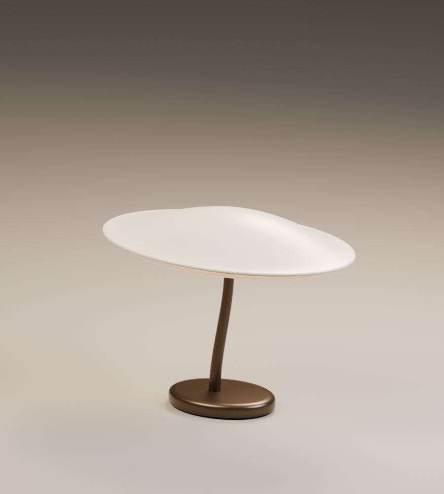
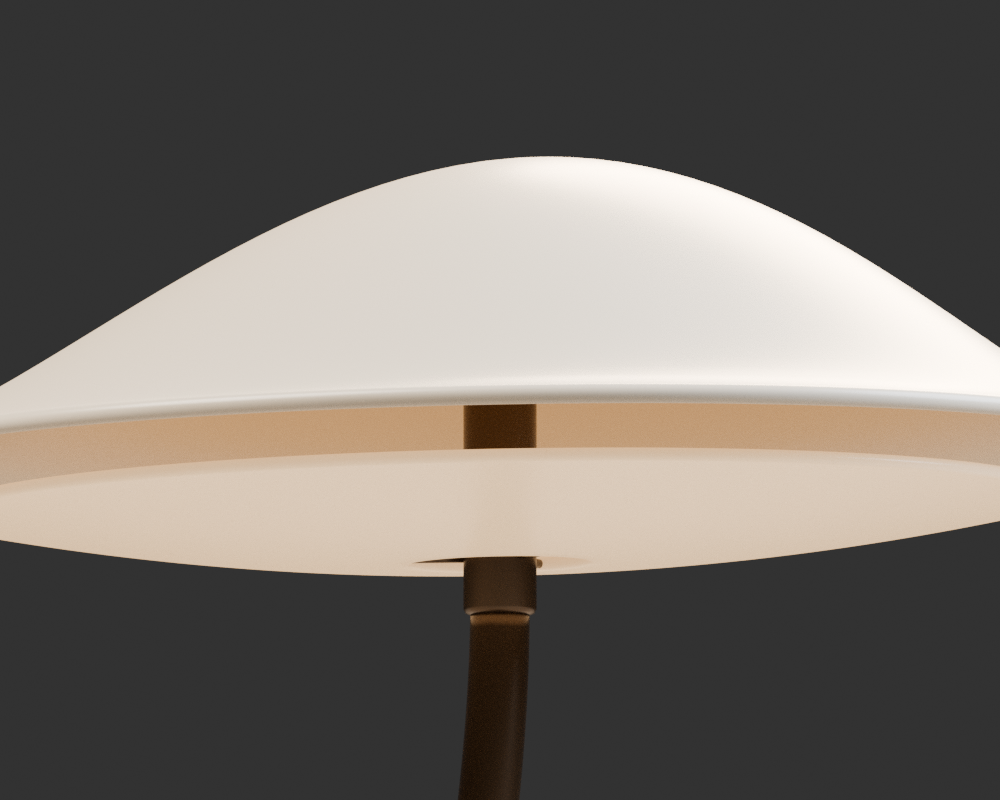
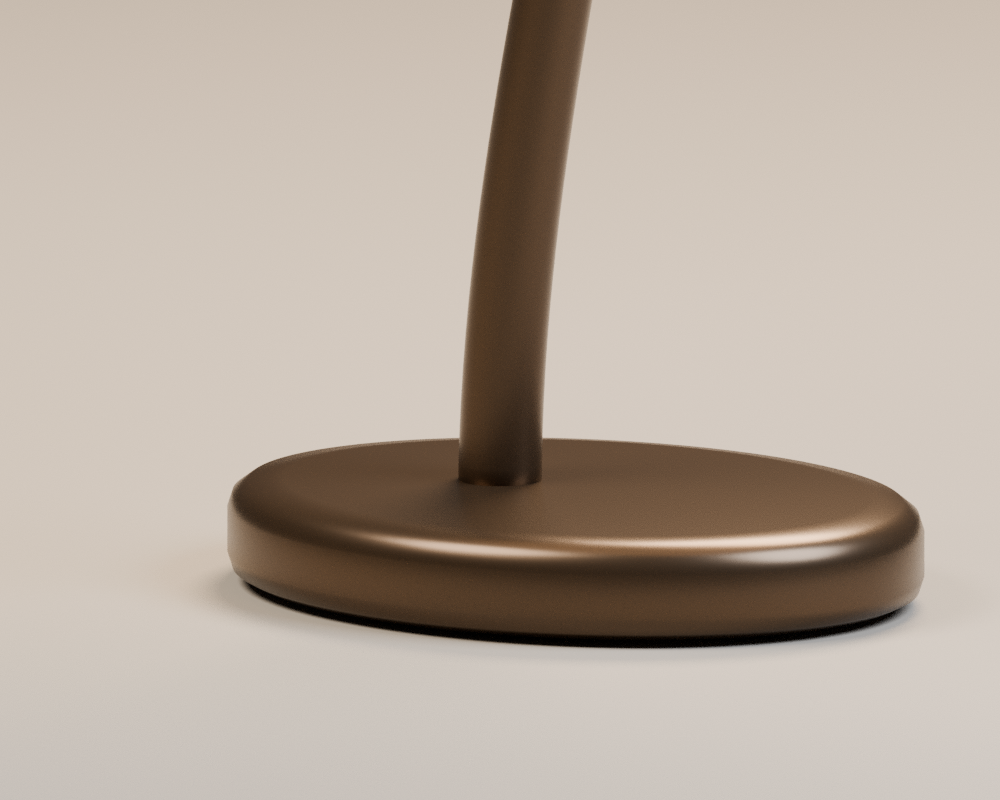
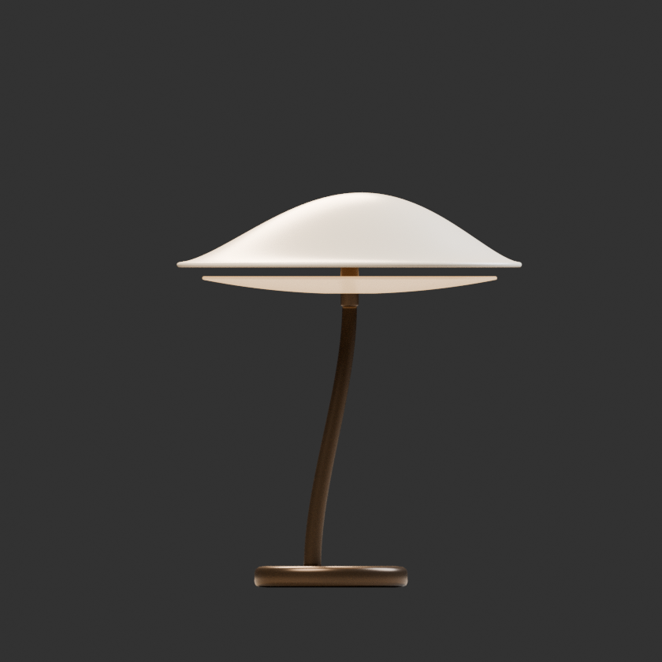

01VESPER / HUSH

PARAMETRIC LIGHTING STUDY
原创数字器物 / 非量产灯具
三种形态，
一套规则。
一枚薄罩，一段轻弯的灯杆。
在宽低与窄高之间，
寻找同一个家族的不同重心。
PRESETPoise
W × D × H416.74 × 325.26 × 477 mm
RECIPE1.1.0 / Blender 4.3.2
Poise / 平衡比例。实际 Blender CPU 离线渲染；不是实时三维。
下载 Poise GLB ↓独立 3D 观察器 / 离线图备用 ↗
模型图片未能载入。仍可阅读规格、打开原图或下载模型；此处不显示替代渲染。
固定机位、曝光与材质的实际离线图。查看原图 ↗
VESPER / PARAMETRIC FAMILY
三组几何预设 · 无外部图片或模型素材
图像比较口径：beauty 使用同一正交相机位置、取景尺度、画布、材质、灯光与曝光。图上高度差来自实际几何，不是网页缩放不同。主机位的透光层仍很细；下方正交与接点图用于补充说明，不能据主图宣称层次已经完全解决。
输入参数描述生成条件；着色行是模型网格包围盒实测外尺寸。罩缘圆角会使实际外宽略大于输入宽度，两者不是相互矛盾的尺寸。
| 参数 / INPUT | Hush | Poise | Reach |
|---|---|---|---|
罩体宽度shade_width | 480 | 410 | 340 |
罩体深度shade_depth | 300 | 320 | 285 |
拱起量shade_rise | 57 | 84 | 113 |
罩缘高度rim_height | 300 | 390 | 515 |
灯杆倾斜量stem_lean | 30 | 45 | 60 |
底座宽度base_width | 200 | 185 | 165 |
底座深度base_depth | 150 | 145 | 140 |
冠部偏移crown_shift | 18 | 14 | 10 |
| 实际整体宽 | 487.38 | 416.74 | 346.53 |
| 实际整体深 | 304.62 | 325.26 | 290.47 |
| 实际整体高 | 360 | 477 | 631 |
02 / CONSTRUCTION

READ THE OBJECT
薄罩的轮廓、退后的透光环、深色支撑各自承担不同的视觉任务。数字材质用于表达层次，不代表实物已完成光效实验。
罩体采用闭合壳体；垂直方向厚度 6 mm。边缘圆角属于实际几何，不用贴图模拟。
修订后外径比为罩体的 0.86；与罩缘的垂直偏置为 16 mm。这不是所有位置的最小间隙值。
轴向套筒、三个定位销与灯杆嵌接逐项记录。允许接触不等于“没有穿插”；边界以模型 QA 为准。


03 / REPRODUCE
“同样效果”指同族的形态语言、材质层次与展示条件；不是不同形状自动获得相同亮度、相同像素或相同审美质量。
KEEP / 固定条件
Blender 4.3.2 / Recipe 1.1.0Cycles CPU · seed 0 · AgX / sRGB
曝光 −0.4 · gamma 1 · 未降噪
同一材质、灯位与取景主图 900×1000 / 1024 samples
正交 840×840 / 384；接点 1000×800 / 256
构造约束保持不变罩体垂直厚度 6 mm · 透光体垂直厚度 4 mm
径比 0.86 · 罩缘参考偏置 16 mm · 三根定位销
CHANGE / 可变参数
罩体比例与冠部偏移宽 / 深 / 拱起量 / 罩缘高 / 冠部偏心
配置单位 m；网页换算为 mm
灯杆与底座的比例柱总偏移 / 底座宽 / 底座深
不使用生成后统一归一化来掩盖真实尺寸差异
新组合必须重新检查输入可接受 ≠ 几何安全 ≠ 审美一致
三个预设不能证明整个八维参数域
REPRODUCTION CONTRACT
解压配方包，在根目录运行。需 Blender 4.3.2、Python 3 与 Pillow；输出目录必须不存在。替换配置文件可生成另外两种几何。
python source/run.py --config configs/poise.json --output my-poise --threads 6
python source/test_contract.py命令常显，也可以直接选中复制。
包装入口按“暂存生成 → 清理图像文本元数据 → 重开 .blend 检查 → GLB 检查 → 无私有路径标记检查”完成后才交付目标目录。读完整复现说明 ↗
输入范围：罩宽 330–490、罩深 270–350、拱起 50–120、罩缘高 280–530、柱偏移 25–65、底座宽 160–210、底座深 130–160、冠偏心 8–22 mm。完整机器可读定义见 config.schema.json。
重要区别：局部接点相机随接点位置调整，不能比较跨变体尺寸。GLB 仅保留几何、PBR 与发光参数，不含摄影棚和灯光；它的实时外观不等于 Cycles 离线图。发光体是视觉代理，未校准光谱、散射或流明。
04 / OPEN ARCHIVE
几何源、摄影条件与检查边界放在同一处。上方每个变体都有 GLB 和 Blender 下载；这里保留完整复现与评审入口。
RECIPE 1.1.0 / WEB 2.0原创数字灯具研究，不是可售产品。不声称电气安全、散热、光学性能或制造可行性。浏览器 WebGL、GPU、真实手机与辅助技术完整体验未验。本页不需要 WebGL；离线图与原模型可直接读取。